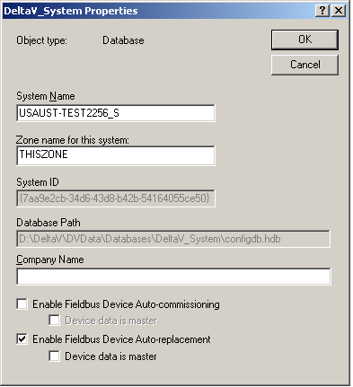
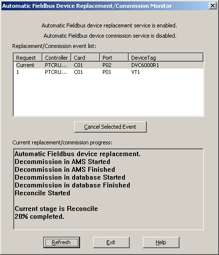
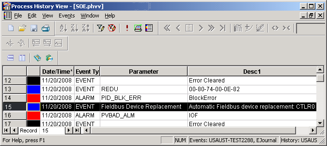

Automatically replacing fieldbus devices
The DeltaV system supports the automatic replacement of fieldbus devices when AMS Device Manager (licensed or unlicensed) is installed. When fieldbus device auto-replacement is enabled as a DeltaV system property on the ProfessionalPLUS workstation, it is possible to automatically replace a fieldbus device on a segment as long as the replacement device matches the manufacturer, type, revision, and device tag of a configured device placeholder in the DeltaV Explorer.
To enable automatic fieldbus device replacement, select the active database in the DeltaV Explorer, select Properties from the context menu, and select the Enable Fieldbus Device Auto-replacement option. The active database is at the top level in the DeltaV Explorer hierarchy. By default the active database is DeltaV_System.
Process loops that are configured to run in replacement devices begin running immediately after the device is replaced. To prevent process disturbances, certain types of fieldbus devices require preconfiguration such as routine calibration and sensor configuration before commissioning.

The direction of data transfer, that is whether the configuration data is transferred from the device to the placeholder or from the placeholder to the device, is determined by the Device data is master option on the active database's Properties dialog. The active database is at the top level in the DeltaV Explorer hierarchy. In the above image, the active database is DeltaV_System. When the Device data master option is enabled, the device's configuration data overwrites the device placeholder's configuration data in the database during automatic device replacement. When this option is not enabled, the device placeholder's configuration data in the database overwrites the device's configuration data during automatic device replacement. When the Enable Fieldbus Device Auto-replacement option is enabled, the Device data is master option is not enabled by default.
Before replacing a device, be sure that the port is downloaded and that the placeholder device is commissioned and downloaded. A blue triangle on an item in DeltaV Explorer indicates that the item needs downloading. For example, the port in the following image needs downloading.
To automatically replace a device, simply disconnect the existing device, and connect the replacement device.
For the replacement service to start and complete properly ensure that:
Automatic device replacement is enabled on the active database's Properties page
The ProfessionalPLUS workstation's setup data has been downloaded
The direction of data transfer (device is master, database is master) has been specified.
The device to be replaced has been removed from the fieldbus segment and the placeholder is not decommissioned
The port does not require a downloaded (no blue triangles on the port)
The replacement device is of the same manufacturer, device type, device revision, and tag as the device to be replaced
Monitoring the Device Replacement Progress
While replacing a fieldbus device, use the Automatic Fieldbus Device Replacement/Commission Monitor to monitor the progress of the device replacement process. Open DeltaV Diagnostics and click .

The information on the replacement progress is not automatically updated in this dialog; click the Refresh button periodically to update it. Click the Help button for more information on this dialog.
Examine any System Messages in Process History View
After device replacement is complete, it is good practice to use the Process History View application to examine how the process functioned during device replacement. For example, you would want to ensure that there are no configuration errors with modules running in devices that were replaced. Click . Use the online help for information on using the application. The following image shows a fieldbus device replacement event in Process History View.

Common Error Messages Seen in Process History View